<title>Phonetics4All Academy</title>
<meta name="description" content="Авторський онлайн-курс Альони Рутковської, PhD: як навчити дітей 5–9 років читати англійською через систему phonics.">
<link rel="preconnect" href="https://fonts.googleapis.com">
<link rel="preconnect" href="https://fonts.gstatic.com" crossorigin>
<link rel="stylesheet" href="https://fonts.googleapis.com/css2?family=Andika:wght@400;700&family=Nunito+Sans:opsz,wght@6..12,400;6..12,600;6..12,800&display=swap">
<style>
/* Сайт як шлях читання: шість кроків методики від звуків до текстів; лисеня-провідник іде смугою кроків угорі. */
:root {
  --plum: #351E28;
  --orange: #FF5C34;
  --milk: #FFF9F2;
  --ice: #D7EFFF;
  --paper: #FFFFFF;
  --plum-soft: #6B5560;       /* приглушений текст: 6.9:1 на молочному */
  --line: #E8DDD6;
  --font-head: "Nunito Sans", "Segoe UI", system-ui, sans-serif;
  --font-body: "Nunito Sans", "Segoe UI", system-ui, sans-serif;
  --font-learn: "Andika", "Nunito Sans", system-ui, sans-serif;
  --step-0: 1rem;
  --step-1: 1.25rem;
  --step-2: clamp(1.5rem, 1.2rem + 1.2vw, 2rem);
  --step-3: clamp(2rem, 1.4rem + 2.6vw, 3.25rem);
  --gutter: clamp(16px, 4vw, 40px);
  --radius: 14px;
  color-scheme: light;
}
* { box-sizing: border-box; }
html { scroll-behavior: smooth; scroll-padding-top: 160px; }
@media (prefers-reduced-motion: reduce) { html { scroll-behavior: auto; } *, *::before, *::after { transition: none !important; animation: none !important; } }
body { background: var(--milk); color: var(--plum); font: 400 var(--step-0)/1.6 var(--font-body); -webkit-font-smoothing: antialiased; }
h1, h2, h3 { font-family: var(--font-head); font-weight: 800; line-height: 1.12; text-wrap: balance; margin: 0; }
h1 { font-size: var(--step-3); letter-spacing: -0.01em; }
h2 { font-size: var(--step-2); }
h3 { font-size: var(--step-1); font-weight: 800; }
p { margin: 0; }
a { color: inherit; }
:focus-visible { outline: 3px solid var(--plum); outline-offset: 3px; border-radius: 6px; }
.wrap { max-width: 1160px; margin-inline: auto; padding-inline: var(--gutter); }
.learn { font-family: var(--font-learn); }
.muted { color: var(--plum-soft); }
.sample { display: inline-block; font: 700 0.72rem/1 var(--font-body); letter-spacing: 0.08em; text-transform: uppercase; background: var(--ice); color: var(--plum); padding: 5px 8px; border-radius: 4px; vertical-align: middle; }

/* Кнопки: помаранчеве тло зі сливовим текстом (5:1) */
.btn { display: inline-flex; align-items: center; justify-content: center; gap: 10px; min-height: 48px; padding: 12px 22px; border-radius: 999px; border: 2px solid var(--plum); font: 800 1rem/1.2 var(--font-body); text-decoration: none; cursor: pointer; transition: transform .15s ease, background-color .15s ease; }
.btn:active { transform: translateY(1px); }
.btn-primary { background: var(--orange); color: var(--plum); border-color: var(--orange); }
.btn-primary:hover { background: #FF7350; }
.btn-ghost { background: transparent; color: var(--plum); }
.btn-ghost:hover { background: var(--paper); }

/* Шапка */
.top { position: sticky; top: env(safe-area-inset-top, 0px); z-index: 20; background: var(--milk); border-bottom: 1px solid var(--line); }
.top-row { display: flex; align-items: center; gap: 24px; padding-block: 10px; }
.top-logo img { width: 200px; height: auto; display: block; }
.top-nav { display: flex; gap: 4px; margin-left: auto; }
.top-nav a { text-decoration: none; font-weight: 600; padding: 8px 12px; border-radius: 8px; display: flex; gap: 6px; align-items: baseline; }
.top-nav a:hover { background: var(--paper); }
.top-nav a[aria-current] { font-weight: 800; box-shadow: inset 0 -3px 0 var(--orange); border-radius: 0; }
.top-nav small { font-size: 0.7rem; color: var(--plum-soft); font-weight: 600; }
.top .btn { min-height: 44px; padding: 8px 18px; }

/* Смуга шляху читання: головний ефект */
.path { padding-block: 26px 12px; }
.track { position: relative; }
.path ol { list-style: none; margin: 0; padding: 0; display: grid; grid-template-columns: repeat(6, 1fr); position: relative; }
.path ol::before { content: ""; position: absolute; left: 0; right: 0; top: 13px; height: 3px; background: var(--line); border-radius: 2px; }
.path .fill { position: absolute; left: 0; top: 13px; z-index: 1; height: 3px; background: var(--orange); border-radius: 2px; width: 0; transition: width .5s cubic-bezier(.3,.7,.2,1); }
.path a { position: relative; z-index: 1; display: flex; flex-direction: column; align-items: center; gap: 4px; text-decoration: none; font-size: 0.82rem; font-weight: 600; color: var(--plum-soft); padding-top: 0; }
.path .dot { width: 12px; height: 12px; margin-top: 8px; border-radius: 50%; background: var(--milk); border: 3px solid var(--line); transition: border-color .3s, background-color .3s; }
.path li.done .dot { border-color: var(--orange); background: var(--orange); }
.path li.on a { color: var(--plum); font-weight: 800; }
.path li.on .dot { border-color: var(--plum); background: var(--milk); }
.path .guide { position: absolute; z-index: 2; top: -22px; width: 40px; height: auto; transform: translateX(-50%); left: 8.33%; transition: left .5s cubic-bezier(.3,.7,.2,1); pointer-events: none; }
.path .num { font-variant-numeric: tabular-nums; }

/* Секції-кроки */
section { padding-block: clamp(56px, 8vw, 104px); }
.eyebrow { display: flex; align-items: center; gap: 12px; font-size: 0.85rem; font-weight: 800; letter-spacing: 0.06em; text-transform: uppercase; color: var(--plum-soft); margin-bottom: 14px; }
.eyebrow img { width: 40px; height: 40px; object-fit: contain; }
.lead { font-size: var(--step-1); max-width: 40ch; }
.split { display: grid; grid-template-columns: minmax(0, 1.1fr) minmax(0, 0.9fr); gap: clamp(28px, 5vw, 72px); align-items: center; }
.stack { display: grid; gap: 18px; }

/* Hero */
.hero { padding-block: clamp(40px, 6vw, 80px) clamp(48px, 7vw, 96px); }
.hero h1 em { font-style: normal; color: var(--plum); background: linear-gradient(transparent 80%, var(--orange) 80%, var(--orange) 96%, transparent 96%); }
.hero .ctas { display: flex; flex-wrap: wrap; gap: 12px; margin-top: 8px; }
.hero .who { display: flex; gap: 14px; align-items: center; margin-top: 18px; font-size: 0.95rem; }
.hero .who img { width: 52px; height: 52px; }
.hero-art { position: relative; aspect-ratio: 1 / 1; max-width: 100%; border-radius: var(--radius); overflow: hidden; background: var(--ice); }
.hero-art .pattern { position: absolute; inset: 0; width: 100%; height: 100%; object-fit: cover; object-position: 30% 50%; }
.hero-art .card { position: absolute; left: 9%; right: 9%; bottom: 9%; background: var(--milk); border-radius: 10px; padding: 18px 20px 20px; display: grid; gap: 10px; }
.hero-art .card .row { display: flex; align-items: flex-end; justify-content: space-between; gap: 12px; }
.hero-art .card .word { font-size: clamp(2.6rem, 2rem + 3vw, 4rem); line-height: 1; letter-spacing: 0.02em; }
.hero-art .card .word span { display: inline-block; }
.hero-art .card .ipa { font-size: 1.1rem; color: var(--plum-soft); }
.hero-art .card img { width: 96px; height: auto; margin-top: -60px; }

/* Крок 1: проблеми */
.why { display: grid; grid-template-columns: minmax(0, 0.9fr) minmax(0, 1.1fr); gap: 0; border: 2px solid var(--plum); border-radius: var(--radius); overflow: hidden; background: var(--paper); margin-top: 36px; }
.why-list { display: grid; align-content: start; border-right: 2px solid var(--plum); }
.why-list button { text-align: left; background: var(--paper); border: 0; border-bottom: 1px solid var(--line); padding: 18px 20px; font: 600 1rem/1.4 var(--font-body); color: var(--plum); cursor: pointer; display: grid; grid-template-columns: 28px 1fr; gap: 10px; min-height: 64px; }
.why-list button:last-child { border-bottom: 0; }
.why-list button .q { font: 800 0.8rem/1.8 var(--font-body); color: var(--plum-soft); font-variant-numeric: tabular-nums; }
.why-list button:hover { background: var(--milk); }
.why-list button[aria-selected="true"] { background: var(--plum); color: var(--milk); }
.why-list button[aria-selected="true"] .q { color: var(--orange); }
.why-panel { padding: clamp(20px, 3vw, 36px); display: grid; gap: 18px; align-content: start; }
.why-panel .said { font-size: 1.6rem; line-height: 1.3; background: var(--milk); border-radius: 10px; padding: 14px 18px; }
.why-panel dl { margin: 0; display: grid; gap: 14px; }
.why-panel dt { font-size: 0.8rem; font-weight: 800; letter-spacing: 0.06em; text-transform: uppercase; color: var(--plum-soft); }
.why-panel dd { margin: 4px 0 0; }
.why-panel .fix dd { border-left: 4px solid var(--orange); padding-left: 14px; }

/* Крок 2: пастки звуків */
.traps { display: grid; grid-template-columns: repeat(3, minmax(0, 1fr)); gap: 16px; margin-top: 36px; }
.trap { background: var(--paper); border: 1px solid var(--line); border-radius: var(--radius); padding: 20px; display: grid; gap: 10px; align-content: start; }
.trap .sym { display: flex; align-items: baseline; justify-content: space-between; gap: 12px; }
.trap .sym b { font-family: var(--font-learn); font-size: 2.6rem; font-weight: 400; line-height: 1; }
.trap .sym span { font-family: var(--font-learn); font-size: 1.4rem; }
.trap .sym span u { text-decoration-color: var(--orange); text-decoration-thickness: 3px; text-underline-offset: 4px; }
.trap .err { font-size: 0.95rem; }
.trap .err s { text-decoration-color: var(--orange); text-decoration-thickness: 2px; }

/* Крок 3: тренажер */
.trainer { background: var(--ice); border-radius: var(--radius); padding: clamp(20px, 4vw, 44px); display: grid; grid-template-columns: minmax(0, 1fr) 220px; gap: clamp(20px, 4vw, 48px); align-items: center; margin-top: 36px; }
.tiles { display: flex; gap: 12px; justify-content: center; transition: gap .35s cubic-bezier(.3,.7,.2,1); }
.tiles.blended { gap: 0; }
.tile { display: grid; justify-items: center; gap: 4px; }
.tile button.arrow { width: 44px; height: 36px; border: 0; background: transparent; cursor: pointer; color: var(--plum); border-radius: 8px; display: grid; place-items: center; }
.tile button.arrow:hover { background: rgba(53,30,40,.08); }
.tile .face { width: clamp(76px, 18vw, 120px); aspect-ratio: 3 / 4; background: var(--milk); border: 2px solid var(--plum); border-radius: 10px; display: grid; place-items: center; font: 400 clamp(3rem, 8vw, 4.8rem)/1 var(--font-learn); position: relative; transition: border-radius .35s; }
.tile.v .face { background: var(--paper); border-color: var(--orange); border-width: 3px; }
.tiles.blended .tile:first-child .face { border-radius: 10px 0 0 10px; }
.tiles.blended .tile:nth-child(2) .face { border-radius: 0; border-left-width: 0; border-right-width: 0; }
.tiles.blended .tile:last-child .face { border-radius: 0 10px 10px 0; }
.tile .ipa { font: 400 1.15rem/1 var(--font-learn); color: var(--plum-soft); min-height: 1.2em; }
.trainer-ctl { display: flex; flex-wrap: wrap; gap: 10px; justify-content: center; margin-top: 20px; }
.result { margin-top: 18px; text-align: center; min-height: 3.4em; display: grid; gap: 4px; }
.result .w { font: 400 2rem/1.1 var(--font-learn); }
.result .note { font-size: 0.95rem; }
.trainer-fox { display: grid; justify-items: center; gap: 10px; text-align: center; }
.trainer-fox img { width: 100%; max-width: 200px; height: auto; transition: transform .25s; }
.trainer-fox .bubble { background: var(--milk); border-radius: 12px; padding: 10px 14px; font-weight: 800; position: relative; }
.honest { font-size: 0.85rem; margin-top: 16px; text-align: center; }

/* Крок 4: матеріали */
.games { display: grid; grid-template-columns: repeat(4, minmax(0, 1fr)); gap: 16px; margin-top: 36px; }
.game { border: 2px dashed var(--line); border-radius: var(--radius); padding: 20px; display: grid; gap: 8px; align-content: start; min-height: 170px; background: var(--paper); }
.game .sample { justify-self: start; }
.game h3 { font-family: var(--font-learn); font-weight: 700; font-size: 1.5rem; }
.sheets { display: grid; grid-template-columns: minmax(0, 1fr) minmax(0, 1fr); gap: 20px; margin-top: 20px; }
.sheet { background: var(--paper); border: 1px solid var(--line); border-radius: 6px; padding: 22px; display: grid; gap: 14px; }
.sheet header { display: flex; justify-content: space-between; align-items: center; gap: 10px; }
.sheet header img { width: 130px; height: auto; }
.sheet .line { font: 400 2rem/1.2 var(--font-learn); display: flex; gap: 24px; flex-wrap: wrap; }
.sheet .blank { border-bottom: 2px solid var(--plum); width: 60%; height: 1.6rem; }
.sheet .cards { display: flex; gap: 12px; }
.sheet .cards div { flex: 1; aspect-ratio: 3/4; border: 2px solid var(--plum); border-radius: 8px; display: grid; place-items: center; font: 400 3rem/1 var(--font-learn); position: relative; }
.sheet .cards small { position: absolute; left: 10px; bottom: 8px; font: 600 0.75rem/1 var(--font-body); }

/* Крок 5: програма */
.program { list-style: none; margin: 36px 0 0; padding: 0; display: grid; gap: 0; border-top: 2px solid var(--plum); }
.program li { display: grid; grid-template-columns: 64px 56px minmax(0, 1fr) minmax(0, 1.2fr); gap: 20px; align-items: center; padding-block: 20px; border-bottom: 1px solid var(--line); }
.program .n { font: 800 1.6rem/1 var(--font-head); font-variant-numeric: tabular-nums; color: var(--orange); }
.program img { width: 48px; height: 48px; object-fit: contain; }
.program h3 { font-size: 1.15rem; }
.for { display: grid; grid-template-columns: repeat(3, minmax(0, 1fr)); gap: 24px; margin-top: 48px; }
.for div { display: grid; gap: 6px; align-content: start; }
.for b { font-size: 1.05rem; }

/* Крок 6: авторка, ціна */
.author { display: grid; grid-template-columns: 260px minmax(0, 1fr); gap: clamp(24px, 4vw, 56px); align-items: start; }
.photo { aspect-ratio: 4 / 5; max-width: 100%; border-radius: var(--radius); background: var(--ice); display: grid; place-items: center; text-align: center; padding: 20px; color: var(--plum-soft); font-weight: 600; font-size: 0.9rem; position: relative; overflow: hidden; }
.photo img { width: 70%; height: auto; }
.creds { list-style: none; padding: 0; margin: 8px 0 0; display: grid; gap: 10px; }
.creds li { display: grid; grid-template-columns: 22px 1fr; gap: 10px; }
.creds li::before { content: ""; width: 12px; height: 12px; margin-top: 7px; background: var(--orange); clip-path: polygon(50% 0, 100% 100%, 0 100%); }
.quotes { display: grid; grid-template-columns: repeat(2, minmax(0, 1fr)); gap: 20px; margin-top: 48px; }
blockquote { margin: 0; padding: 22px; background: var(--paper); border-radius: var(--radius); display: grid; gap: 12px; border: 1px solid var(--line); }
blockquote p { font-size: 1.05rem; }
blockquote footer { font-size: 0.9rem; color: var(--plum-soft); display: flex; justify-content: space-between; gap: 10px; flex-wrap: wrap; }

.buy { position: relative; background: var(--plum); color: var(--milk); overflow: hidden; }
.buy .bg { position: absolute; inset: 0; width: 100%; height: 100%; object-fit: cover; opacity: .9; }
.buy .wrap { position: relative; }
.price-card { background: var(--milk); color: var(--plum); border-radius: var(--radius); padding: clamp(24px, 4vw, 48px); max-width: 760px; margin-inline: auto; display: grid; grid-template-columns: minmax(0, 1fr) 180px; gap: 28px; align-items: center; }
.price-card .price { font: 800 2.2rem/1 var(--font-head); font-variant-numeric: tabular-nums; }
.price-card ul { margin: 0; padding-left: 20px; display: grid; gap: 6px; }
.price-card img { width: 100%; height: auto; }
.status { font-size: 0.92rem; background: var(--ice); padding: 10px 14px; border-radius: 8px; }

.free { display: grid; grid-template-columns: minmax(0, 1fr) minmax(0, 1fr); gap: clamp(24px, 4vw, 56px); }
form { display: grid; gap: 14px; background: var(--paper); border: 1px solid var(--line); border-radius: var(--radius); padding: 24px; }
label { font-weight: 600; font-size: 0.95rem; display: grid; gap: 6px; }
input, textarea { font: 400 1rem/1.4 var(--font-body); color: var(--plum); background: var(--milk); border: 1.5px solid #CDBFB8; border-radius: 8px; padding: 12px 14px; min-height: 48px; width: 100%; }
input:focus, textarea:focus { outline: 3px solid var(--plum); outline-offset: 1px; }
.check { display: grid; grid-template-columns: 22px 1fr; gap: 10px; font-weight: 400; align-items: start; }
.check input { min-height: auto; width: 20px; height: 20px; margin-top: 2px; accent-color: var(--orange); }
details { border-bottom: 1px solid var(--line); padding-block: 14px; }
summary { font-weight: 800; cursor: pointer; min-height: 32px; display: flex; align-items: center; }
details p { margin-top: 8px; }

footer.site { background: var(--plum); color: var(--milk); padding-block: 48px 40px; }
footer.site .wrap { display: grid; grid-template-columns: minmax(0, 1.3fr) repeat(3, minmax(0, 1fr)); gap: 28px; }
footer.site img { width: 220px; height: auto; }
footer.site h4 { margin: 0 0 8px; font-size: 0.85rem; letter-spacing: .06em; text-transform: uppercase; color: var(--ice); }
footer.site ul { list-style: none; margin: 0; padding: 0; display: grid; gap: 6px; }
footer.site a { text-decoration: none; }
footer.site a:hover { text-decoration: underline; }
footer.site .fine { grid-column: 1 / -1; font-size: 0.85rem; color: #D9CCD2; border-top: 1px solid #5A4450; padding-top: 18px; }

/* Адаптивність */
@media (max-width: 1000px) {
  .top-nav { display: none; }
  .top .btn { margin-left: auto; }
  .games { grid-template-columns: repeat(2, minmax(0, 1fr)); }
  .program li { grid-template-columns: 44px 48px minmax(0, 1fr); }
  .program li p { grid-column: 3; }
  .traps { grid-template-columns: repeat(2, minmax(0, 1fr)); }
}
@media (max-width: 760px) {
  .split, .why, .trainer, .author, .free, .sheets, .quotes, .for, .price-card { grid-template-columns: minmax(0, 1fr); }
  .why-list { border-right: 0; border-bottom: 2px solid var(--plum); }
  .traps, .games { grid-template-columns: minmax(0, 1fr); }
  .path a .lbl { display: none; }
  .path li.on a .lbl { display: block; position: absolute; top: 30px; white-space: nowrap; }
  .path { padding-bottom: 30px; }
  .top-logo img { width: 160px; }
  .trainer-fox { grid-template-columns: 110px 1fr; justify-items: start; text-align: left; align-items: center; }
  .trainer-fox img { max-width: 110px; }
  .author .photo { max-width: 260px; }
  .price-card img { display: none; }
  footer.site .wrap { grid-template-columns: minmax(0, 1fr) minmax(0, 1fr); }
  footer.site .brand { grid-column: 1 / -1; }
  .hero-art { aspect-ratio: 4 / 3; }
}
@media (max-width: 420px) {
  .top .btn { padding: 8px 14px; font-size: 0.9rem; }
  .top-logo img { width: 132px; }
}
</style>

<header class="top">
  <div class="wrap top-row">
    <a class="top-logo" href="#start" aria-label="Phonetics4All, на початок">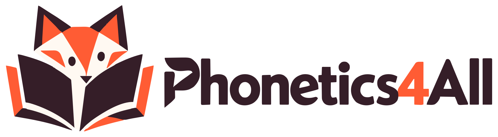</a>
    <nav class="top-nav" aria-label="Розділи">
      <a href="#start" aria-current="page">Academy</a>
      <a href="#step-4">Resources <small>скоро</small></a>
      <a href="#step-3">Practice <small>демо</small></a>
    </nav>
    <a class="btn btn-primary" href="#buy">Купити курс</a>
  </div>
  <div class="wrap path" aria-label="Шлях читання">
    <div class="track">
    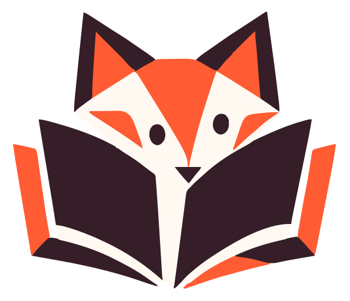
    <span class="fill" aria-hidden="true"></span>
    <ol>
      <li data-step="1"><a href="#step-1"><span class="dot"></span><span class="lbl">Звуки</span></a></li>
      <li data-step="2"><a href="#step-2"><span class="dot"></span><span class="lbl">Звуки й букви</span></a></li>
      <li data-step="3"><a href="#step-3"><span class="dot"></span><span class="lbl">Blending</span></a></li>
      <li data-step="4"><a href="#step-4"><span class="dot"></span><span class="lbl">Слова</span></a></li>
      <li data-step="5"><a href="#step-5"><span class="dot"></span><span class="lbl">Речення</span></a></li>
      <li data-step="6"><a href="#step-6"><span class="dot"></span><span class="lbl">Тексти</span></a></li>
    </ol>
    </div>
  </div>
</header>

<main>
  <!-- Hero -->
  <section class="hero" id="start">
    <div class="wrap split">
      <div class="stack">
        <h1>Діти знають літери, але не читають слова? <em>Дайте їм систему.</em></h1>
        <p class="lead">Авторський онлайн-курс для вчителів англійської, які працюють із дітьми 5–9 років. Шість кроків від звуків до перших текстів, з готовими матеріалами на кожен урок.</p>
        <div class="ctas">
          <a class="btn btn-primary" href="#buy">Купити курс</a>
          <a class="btn btn-ghost" href="#step-3">Спробувати тренажер</a>
        </div>
        <div class="who">
          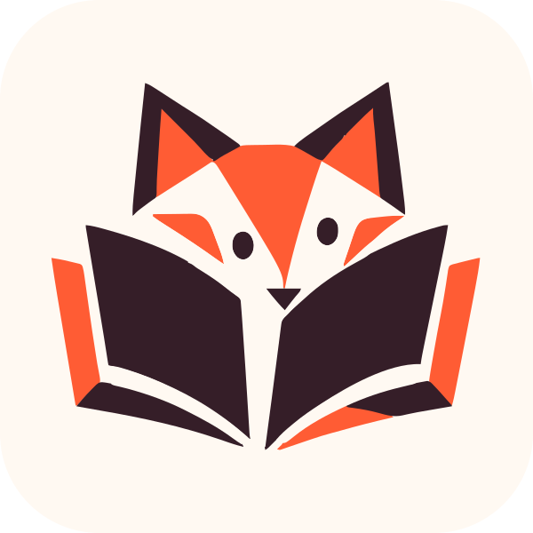
          <p><b>Альона Рутковська, PhD</b><br><span class="muted">Cambridge Coordinator. Методика захищена авторським правом.</span></p>
        </div>
      </div>
      <div class="hero-art" aria-hidden="true">
        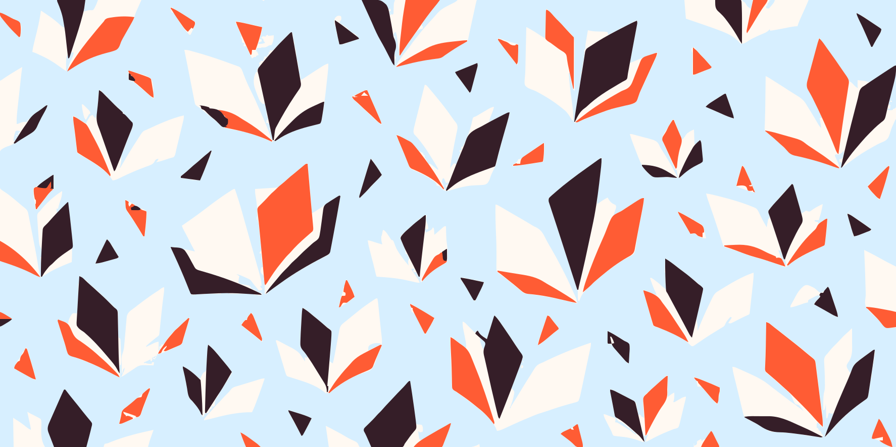
        <div class="card">
          <div class="row">
            <div>
              <div class="word learn"><span>c</span><span style="color:var(--orange)">a</span><span>t</span></div>
              <div class="ipa learn">/k/ + /æ/ + /t/ → /kæt/</div>
            </div>
            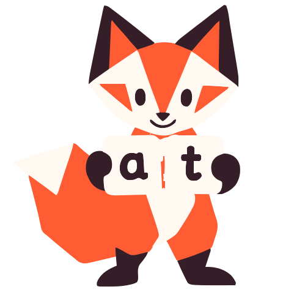
          </div>
          <p class="muted" style="font-size:.95rem">Не «сі-ей-ті», а три звуки, злиті в одне слово.</p>
        </div>
      </div>
    </div>
  </section>

  <!-- Крок 1 -->
  <section id="step-1" data-step="1" style="background:var(--paper)">
    <div class="wrap">
      <div class="eyebrow">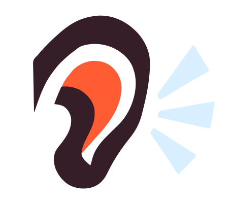Крок 1 з 6 · Звуки</div>
      <h2>Чому дитина не може прочитати слово?</h2>
      <p class="lead muted" style="margin-top:12px">Оберіть ситуацію з вашого уроку. Кожна має свою причину і свій спосіб допомогти.</p>
      <div class="why">
        <div class="why-list" role="tablist" aria-label="Ситуації на уроці" id="why-list"></div>
        <div class="why-panel" role="tabpanel" id="why-panel" aria-live="polite"></div>
      </div>
      <p class="muted" style="margin-top:14px;font-size:.9rem"><span class="sample">Зразок</span> Пояснення написані для демо. Остаточні тексти готує Альона.</p>
    </div>
  </section>

  <!-- Крок 2 -->
  <section id="step-2" data-step="2">
    <div class="wrap">
      <div class="eyebrow">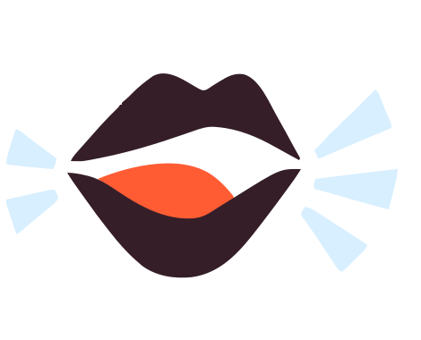Крок 2 з 6 · Звуки й букви</div>
      <div class="split" style="align-items:end">
        <h2>Українська дитина чує англійську крізь українські звуки</h2>
        <p class="muted">Міжнародні програми написані для дітей, у яких англійська рідна. Курс враховує, які звуки українська мова підміняє, і вчить їх розрізняти з першого уроку.</p>
      </div>
      <div class="traps" id="traps"></div>
      <p class="muted" style="margin-top:14px;font-size:.9rem"><span class="sample">Зразок</span> Добірку звуків і порядок їх уведення визначає методика Альони.</p>
    </div>
  </section>

  <!-- Крок 3 -->
  <section id="step-3" data-step="3" style="background:var(--paper)">
    <div class="wrap">
      <div class="eyebrow">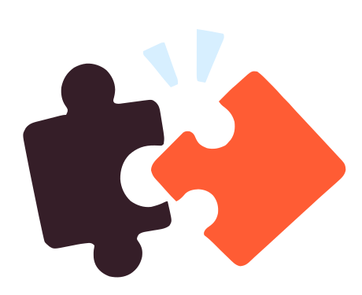Крок 3 з 6 · Blending</div>
      <div class="split" style="align-items:end">
        <h2>Складіть слово так, як його складає дитина</h2>
        <p class="muted">Змінюйте звуки стрілками й зливайте їх. Тренажер працює на CVC-словах: приголосний, голосний, приголосний. Якщо вийшло псевдослово, це теж корисно: ним перевіряють, чи дитина декодує, а не вгадує.</p>
      </div>
      <div class="trainer">
        <div>
          <div class="tiles" id="tiles"></div>
          <div class="trainer-ctl">
            <button class="btn btn-primary" id="blend" type="button">Злити звуки</button>
            <button class="btn btn-ghost" id="say" type="button">Прослухати слово</button>
            <button class="btn btn-ghost" id="shuffle" type="button">Інше слово</button>
          </div>
          <div class="result" id="result" aria-live="polite"></div>
        </div>
        <div class="trainer-fox">
          
          <p class="bubble" id="bubble">Прислухайся до кожного звука</p>
        </div>
      </div>
      <p class="honest muted" id="speech-note">Слово озвучує синтезатор браузера, тому окремі звуки він не вимовляє. У курсі звуки озвучує Альона.</p>
    </div>
  </section>

  <!-- Крок 4 -->
  <section id="step-4" data-step="4">
    <div class="wrap">
      <div class="eyebrow">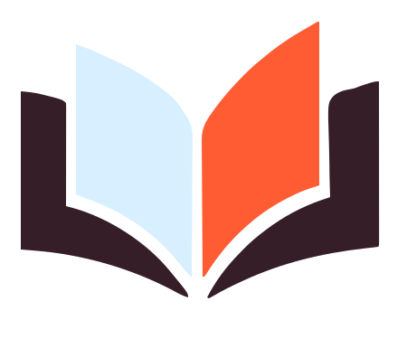Крок 4 з 6 · Слова</div>
      <div class="split" style="align-items:end">
        <h2>Готові ігри й аркуші на кожен урок</h2>
        <p class="muted">Не треба шукати вправи в інтернеті чи малювати їх самій. Матеріали йдуть у тій самій послідовності, що й методика. Усі файли у форматі PDF, друкуєте самі.</p>
      </div>
      <div class="games">
        <article class="game"><h3>Ice Cream</h3><p class="muted">Навчальна мета й правила гри</p><span class="sample">Опис готує Альона</span></article>
        <article class="game"><h3>Pizza</h3><p class="muted">Навчальна мета й правила гри</p><span class="sample">Опис готує Альона</span></article>
        <article class="game"><h3>Nest</h3><p class="muted">Навчальна мета й правила гри</p><span class="sample">Опис готує Альона</span></article>
        <article class="game"><h3>Hungry Frog</h3><p class="muted">Навчальна мета й правила гри</p><span class="sample">Опис готує Альона</span></article>
      </div>
      <div class="sheets">
        <div class="sheet">
          <header><span class="sample">Зразок аркуша</span></header>
          <h3>Читаємо слова</h3>
          <p>Прочитай. Обери слово. Спробуй ще.</p>
          <div class="line"><span>cat</span><span>map</span><span>sun</span></div>
          <p>Моє слово: <span class="blank" style="display:inline-block;vertical-align:bottom"></span></p>
        </div>
        <div class="sheet">
          <header><b>Картки для злиття</b><span class="sample">Зразок карток</span></header>
          <div class="cards"><div>s<small>01</small></div><div style="border-color:var(--orange)">u<small>02</small></div><div>n<small>03</small></div></div>
          <p class="muted" style="font-size:.95rem">Workbook для дітей 5–7 років уже готовий. Фрагменти сторінок покажемо тут.</p>
        </div>
      </div>
    </div>
  </section>

  <!-- Крок 5 -->
  <section id="step-5" data-step="5" style="background:var(--paper)">
    <div class="wrap">
      <div class="eyebrow">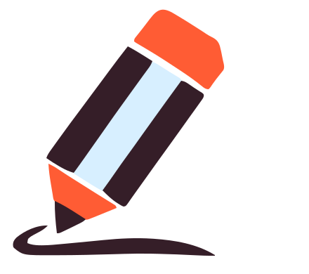Крок 5 з 6 · Речення</div>
      <h2>Програма курсу <span class="sample">Зразок</span></h2>
      <p class="lead muted" style="margin-top:12px">Модулі йдуть тим самим шляхом, яким дитина вчиться читати. Остаточну програму затверджує Альона.</p>
      <ol class="program">
        <li><span class="n">01</span><h3>Фонематичний слух</h3><p class="muted">Як навчити дитину чути окремі звуки в слові ще до літер.</p></li>
        <li><span class="n">02</span><h3>Звуко-буквені відповідності</h3><p class="muted">У якому порядку вводити звуки й букви і як не плутати їх із назвами літер.</p></li>
        <li><span class="n">03</span><h3>Blending і segmenting</h3><p class="muted">Злиття звуків у слово і розкладання слова на звуки.</p></li>
        <li><span class="n">04</span><h3>Читання слів</h3><p class="muted">Від CVC-слів до буквосполучень; ігри на закріплення.</p></li>
        <li><span class="n">05</span><h3>Речення й декодовані тексти</h3><p class="muted">Тексти лише з тих звуків, які дитина вже знає.</p></li>
        <li><span class="n">06</span>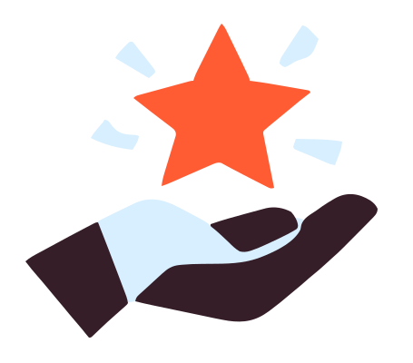<h3>Діагностика й адаптація</h3><p class="muted">Як побачити, де дитина застрягла; інклюзивна адаптація матеріалів.</p></li>
      </ol>
      <div class="for">
        <div><b>Для кого</b><p class="muted">Вчителі англійської, репетитори, педагоги початкової школи, які працюють із дітьми 5–9 років.</p></div>
        <div><b>Формат</b><p class="muted">Онлайн, у власному темпі. Відеоуроки, методичні пояснення, PDF-матеріали. <span class="sample">Уточнюється</span></p></div>
        <div><b>Після курсу</b><p class="muted">Ви знаєте, в якій послідовності вчити читати, і маєте матеріали на кожен крок.</p></div>
      </div>
    </div>
  </section>

  <!-- Крок 6 -->
  <section id="step-6" data-step="6">
    <div class="wrap">
      <div class="eyebrow">Крок 6 з 6 · Тексти</div>
      <div class="author">
        <div class="photo"><div>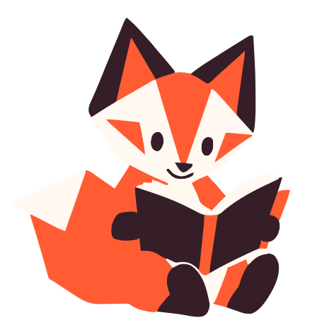<p>Тут буде фото авторки</p></div></div>
        <div class="stack">
          <h2>Альона Рутковська, PhD</h2>
          <p class="lead">Педагогиня й авторка методики навчання читання англійською для українськомовних дітей.</p>
          <ul class="creds">
            <li>Доктор філософії (PhD)</li>
            <li>Cambridge Coordinator</li>
            <li>Авторка Workbook для дітей 5–7 років</li>
            <li><span>Методику захищено свідоцтвом про авторське право <span class="sample">№ і дата уточнюються</span></span></li>
          </ul>
        </div>
      </div>
      <div class="quotes">
        <blockquote><p>«Мої першокласники нарешті перестали вгадувати слова за картинкою. За місяць читають короткі речення самі.»</p><footer><span>Вчителька англійської, Київ</span><span class="sample">Зразок відгуку</span></footer></blockquote>
        <blockquote><p>«Найцінніше для мене те, що матеріали вже розкладені по уроках. Я перестала витрачати вечори на пошук аркушів.»</p><footer><span>Репетиторка, Львів</span><span class="sample">Зразок відгуку</span></footer></blockquote>
      </div>
    </div>
  </section>

  <!-- Купівля -->
  <section class="buy" id="buy">
    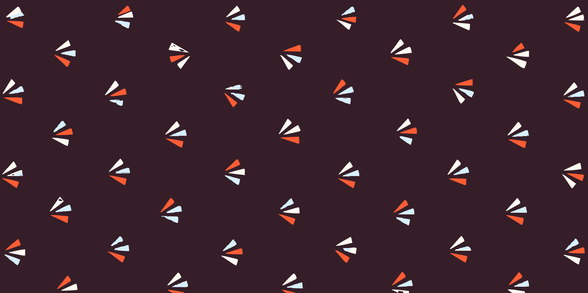
    <div class="wrap">
      <div class="price-card">
        <div class="stack">
          <h2>Онлайн-курс Phonetics4All</h2>
          <p class="price">Ціну буде оголошено <span class="sample">Зразок</span></p>
          <ul>
            <li>Шість модулів від звуків до текстів</li>
            <li>PDF-матеріали до кожного модуля</li>
            <li>Доступ відкривається одразу після оплати</li>
          </ul>
          <div><button class="btn btn-primary" id="pay" type="button">Купити курс</button></div>
          <p class="status" id="pay-status" hidden>Оплату ще не підключено, це демо. Після запуску тут буде перехід до оплати й автоматичний доступ до навчання.</p>
        </div>
        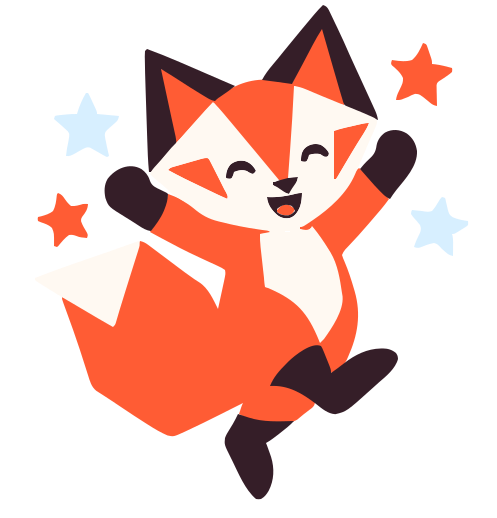
      </div>
    </div>
  </section>

  <!-- Безкоштовне й питання -->
  <section id="contact">
    <div class="wrap free">
      <div class="stack">
        <h2>Ще не готові купувати?</h2>
        <p class="lead muted">Отримайте безкоштовний матеріал у Telegram-боті Phonetics4All і спробуйте його на уроці.</p>
        <div><button class="btn btn-ghost" id="tg" type="button">Отримати в Telegram</button></div>
        <p class="status" id="tg-status" hidden>Посилання на бота додамо, щойно він запрацює.</p>
        <div style="margin-top:24px">
          <details><summary>Коли я отримаю доступ?</summary><p class="muted">Одразу після оплати на пошту прийде підтвердження й інструкція з доступу. <span class="sample">Умови уточнюються</span></p></details>
          <details><summary>Чи підійде курс, якщо я працюю з дітьми з особливими освітніми потребами?</summary><p class="muted">У курсі є модуль про інклюзивну адаптацію матеріалів.</p></details>
          <details><summary>Чи можна купити матеріали без курсу?</summary><p class="muted">Так, згодом у розділі Resources. Усі матеріали продаються у форматі PDF, без друку й доставки.</p></details>
        </div>
      </div>
      <form id="form" novalidate>
        <h3>Поставити питання</h3>
        <label for="f-name">Ім'я<input id="f-name" name="name" autocomplete="name" required></label>
        <label for="f-email">Email<input id="f-email" name="email" type="email" autocomplete="email" required></label>
        <label for="f-msg">Питання<textarea id="f-msg" name="msg" rows="4" required></textarea></label>
        <label class="check" for="f-ok"><input id="f-ok" type="checkbox" required><span>Погоджуюсь з політикою конфіденційності</span></label>
        <div><button class="btn btn-primary" type="submit">Надіслати</button></div>
        <p class="status" id="form-status" hidden></p>
      </form>
    </div>
  </section>
</main>

<footer class="site">
  <div class="wrap">
    <div class="brand stack"><p>Лисеня, яке читає разом з тобою.</p></div>
    <div><h4>Academy</h4><ul><li><a href="#step-5">Програма курсу</a></li><li><a href="#buy">Купити курс</a></li></ul></div>
    <div><h4>Resources</h4><ul><li>PDF-матеріали, скоро</li><li>Workbook 5–7 років, скоро</li></ul></div>
    <div><h4>Practice</h4><ul><li><a href="#step-3">Тренажер CVC</a></li><li>Нові тренажери, скоро</li></ul></div>
    <p class="fine">Демо-версія сайту. Позначки «Зразок» замінимо справжніми даними. Публічна оферта й політика конфіденційності з'являться до запуску продажів.</p>
  </div>
</footer>

<script>
(() => {
  const $ = (s, r = document) => r.querySelector(s);
  const reduce = matchMedia('(prefers-reduced-motion: reduce)').matches;

  /* Крок 1: ситуації */
  const cases = [
    { t: 'Називає літери, а слово не складає', said: '«сі… ей… ті…»',
      why: 'Дитина вивчила назви літер, а читати допомагають звуки. З назв «сі-ей-ті» слово cat не складеться.',
      fix: 'Вчити звук, а не назву: /k/, /æ/, /t/. Назви літер відкласти на потім.' },
    { t: 'Вгадує слово за картинкою чи першою літерою', said: 'бачить cat, каже «kitten»',
      why: 'Дитина навчилась вгадувати замість декодувати. На знайомих текстах це непомітно.',
      fix: 'Давати тексти лише з вивчених звуків і перевіряти псевдословами, наприклад «tib», які не вгадаєш.' },
    { t: 'Читає англійське слово українськими звуками', said: 'ship → «шіп», cat → «кет»',
      why: 'Дитина підставляє найближчий звук з української. Звуків /æ/ та /ɪ/ в українській немає.',
      fix: 'Контрастні пари: cat / bet, ship / sheep. Спершу чути різницю, потім читати.' },
    { t: 'Знає слова напам\'ять, а нове прочитати не може', said: 'dog читає, dot не може',
      why: 'Слова запам\'ятали цілком, як картинку. Перенести це на нові слова дитина не може.',
      fix: 'Системна послідовність: кожен новий звук одразу в нових словах, а не у вивченому списку.' }
  ];
  const list = $('#why-list'), panel = $('#why-panel');
  cases.forEach((c, i) => {
    const b = document.createElement('button');
    b.type = 'button'; b.role = 'tab'; b.id = 'why-' + i;
    b.setAttribute('aria-controls', 'why-panel');
    b.innerHTML = `<span class="q">${String(i + 1).padStart(2, '0')}</span><span>${c.t}</span>`;
    b.addEventListener('click', () => pick(i));
    b.addEventListener('keydown', e => {
      if (e.key === 'ArrowDown' || e.key === 'ArrowUp') {
        e.preventDefault();
        const n = (i + (e.key === 'ArrowDown' ? 1 : cases.length - 1)) % cases.length;
        pick(n); $('#why-' + n).focus();
      }
    });
    list.append(b);
  });
  function pick(i) {
    list.querySelectorAll('button').forEach((b, j) => { b.setAttribute('aria-selected', j === i); b.tabIndex = j === i ? 0 : -1; });
    const c = cases[i];
    panel.setAttribute('aria-labelledby', 'why-' + i);
    panel.innerHTML = `<p class="said learn">${c.said}</p><dl><div><dt>Чому так</dt><dd>${c.why}</dd></div><div class="fix"><dt>Що допомагає</dt><dd>${c.fix}</dd></div></dl>`;
  }
  pick(0);

  /* Крок 2: пастки */
  const traps = [
    ['æ', '<u>a</u> in cat', 'Звука немає в українській; дитина каже <s>«кет»</s>.'],
    ['ɪ · iː', 'sh<u>i</u>p · sh<u>ee</u>p', 'В українській довгота не змінює значення, тож ship і sheep звучать однаково.'],
    ['θ · ð', '<u>th</u>ink · <u>th</u>is', 'Підміняють на [с], [ф] або [з]: <s>«сінк»</s>, <s>«зіс»</s>.'],
    ['w', '<u>w</u>in', 'Губи округлені, зуби не торкаються губи. Часто звучить як <s>«він»</s>.'],
    ['h', '<u>h</u>at', 'Легкий видих, а не дзвінкий український [г]: не <s>«гет»</s>.'],
    ['ŋ', 'si<u>ng</u>', 'Один звук без [г] у кінці: не <s>«сінг»</s>.']
  ];
  $('#traps').innerHTML = traps.map(([s, w, e]) =>
    `<article class="trap"><div class="sym"><b>/${s}/</b><span>${w}</span></div><p class="err">${e}</p></article>`).join('');

  /* Крок 3: тренажер CVC */
  const ON = 'b c d f g h j l m n p r s t w'.split(' ');
  const VO = 'a e i o u'.split(' ');
  const CO = 'b d g m n p t'.split(' ');
  const IPA = { c: 'k', j: 'dʒ', a: 'æ', e: 'e', i: 'ɪ', o: 'ɒ', u: 'ʌ' };
  const WORDS = new Set(('bad bag ban bat cab can cap cat dad dam fan fat gap had ham hat jam lab lad lap mad man map mat nap pad pan pat rag ram ran rap rat sad sap sat tab tag tan tap wag ' +
    'bed beg bet den fed get hem hen jet led leg let men met net peg pen pet red set ten web wed wet ' +
    'bib bid big bin bit dig dim din dip fig fin fit hid him hip hit jig lid lip lit mid nip pig pin pit rib rid rig rim rip sip sit tin tip wig win wit ' +
    'cob cod cog cop cot dog dot fog got hog hop hot job jog jot log lot mob mom mop nod not pod pop pot rob rod rot sob top ' +
    'bud bug bun but cub cup cut dug fun gum gun hug hum hut jug lug mud mug nut pug pun pup rub rug run rut sub sum sun tub tug').split(' '));
  const sets = [ON, VO, CO];
  const names = ['Перший звук', 'Голосний', 'Останній звук'];
  const state = [ON.indexOf('c'), VO.indexOf('a'), CO.indexOf('t')];
  const tiles = $('#tiles');
  const chevron = d => `<svg width="20" height="20" viewBox="0 0 20 20" aria-hidden="true"><path d="${d ? 'M4 7l6 6 6-6' : 'M4 13l6-6 6 6'}" fill="none" stroke="currentColor" stroke-width="2.5" stroke-linecap="round" stroke-linejoin="round"/></svg>`;
  sets.forEach((set, k) => {
    const t = document.createElement('div');
    t.className = 'tile' + (k === 1 ? ' v' : '');
    t.innerHTML = `<button class="arrow" type="button" aria-label="${names[k]}: попередній">${chevron(0)}</button><div class="face learn" aria-live="polite"></div><button class="arrow" type="button" aria-label="${names[k]}: наступний">${chevron(1)}</button><span class="ipa"></span>`;
    const [up, down] = t.querySelectorAll('button');
    up.onclick = () => step(k, -1); down.onclick = () => step(k, 1);
    tiles.append(t);
  });
  const word = () => state.map((v, k) => sets[k][v]).join('');
  function render() {
    tiles.querySelectorAll('.tile').forEach((t, k) => {
      const l = sets[k][state[k]];
      t.querySelector('.face').textContent = l;
      t.querySelector('.ipa').textContent = '/' + (IPA[l] || l) + '/';
    });
  }
  const fox = $('#fox'), bubble = $('#bubble'), result = $('#result');
  function setFox(name, text) { fox.src = 'assets/brand/mascot/fox-' + name + '.svg'; bubble.textContent = text; }
  function reset() {
    tiles.classList.remove('blended');
    result.innerHTML = '<p class="note muted">Натисніть «Злити звуки».</p>';
    setFox('connect', 'Прислухайся до кожного звука');
  }
  function step(k, d) { state[k] = (state[k] + d + sets[k].length) % sets[k].length; render(); reset(); }
  $('#blend').onclick = () => {
    tiles.classList.add('blended');
    const w = word(), real = WORDS.has(w);
    const ipa = state.map((v, k) => IPA[sets[k][v]] || sets[k][v]).join('');
    result.innerHTML = `<p class="w">${w} <span class="muted" style="font-size:1.2rem">/${ipa}/</span></p>` +
      `<p class="note">${real ? 'Справжнє слово.' : 'Псевдослово: такого слова немає, але дитина, яка декодує, прочитає і його.'}</p>`;
    real ? setFox('celebrate', 'У тебе вийшло!') : setFox('read', 'Прочитай ще раз, звук за звуком');
  };
  $('#shuffle').onclick = () => {
    const pool = [...WORDS], w = pool[Math.floor(Math.random() * pool.length)];
    [...w].forEach((ch, k) => state[k] = sets[k].indexOf(ch));
    render(); reset();
  };
  const canSpeak = 'speechSynthesis' in window;
  $('#say').onclick = () => {
    if (!canSpeak) { $('#speech-note').textContent = 'Цей браузер не вміє озвучувати текст. У курсі звуки й слова озвучує Альона.'; return; }
    try {
      speechSynthesis.cancel();
      const u = new SpeechSynthesisUtterance(word());
      u.lang = 'en-GB'; u.rate = 0.75;
      const v = speechSynthesis.getVoices().find(v => /^en(-|_)GB/i.test(v.lang)) || speechSynthesis.getVoices().find(v => /^en/i.test(v.lang));
      if (v) u.voice = v;
      setFox('speak', 'Слухай: ' + word());
      speechSynthesis.speak(u);
    } catch (e) { $('#speech-note').textContent = 'Озвучення тут недоступне. У курсі звуки й слова озвучує Альона.'; }
  };
  render(); reset();

  /* Чесні заглушки */
  $('#pay').onclick = () => { $('#pay-status').hidden = false; };
  $('#tg').onclick = () => { $('#tg-status').hidden = false; };
  $('#form').addEventListener('submit', e => {
    e.preventDefault();
    const f = e.target, s = $('#form-status');
    const bad = [...f.querySelectorAll('[required]')].find(el => el.type === 'checkbox' ? !el.checked : !el.value.trim() || (el.type === 'email' && !el.checkValidity()));
    s.hidden = false;
    if (bad) { s.textContent = bad.type === 'checkbox' ? 'Поставте галочку згоди, щоб надіслати питання.' : bad.type === 'email' ? 'Перевірте email: схоже, в ньому помилка.' : 'Заповніть усі поля.'; bad.focus(); return; }
    s.textContent = 'Дякуємо! Це демо, тому форма ще нікуди не надсилає дані. Після запуску відповідь прийде на ваш email.';
  });

  /* Головний ефект: лисеня йде шляхом читання */
  const items = [...document.querySelectorAll('.path li')];
  const guide = $('.path .guide'), fill = $('.path .fill');
  function setStep(n) {
    items.forEach((li, i) => { li.classList.toggle('on', i + 1 === n); li.classList.toggle('done', i + 1 < n); });
    const pos = n ? ((n - 0.5) / 6) * 100 : (0.5 / 6) * 100;
    guide.style.left = pos + '%';
    fill.style.width = n ? pos + '%' : '0';
  }
  const steps = [...document.querySelectorAll('section[data-step]')];
  let raf = 0;
  function onScroll() {
    raf = 0;
    const mid = innerHeight * 0.45;
    let cur = 0;
    steps.forEach(s => { if (s.getBoundingClientRect().top < mid) cur = +s.dataset.step; });
    if ($('#buy').getBoundingClientRect().top < mid) cur = 6;
    setStep(cur);
  }
  addEventListener('scroll', () => { if (!raf) raf = requestAnimationFrame(onScroll); }, { passive: true });
  onScroll();
})();
</script>
